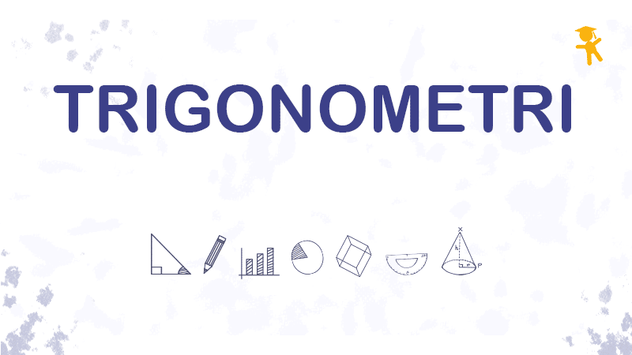

Capaian Pembelajaran
Di akhir fase E, siswa dapat menyelesaikan permasalahan segitiga siku-siku yang melibatkan perbandingan trigonometri dan aplikasinya
Tujuan Pembelajaran
Siswa dapat menggeneralisasi rasio perbandingan trigonometri untuk sudut-sudut di berbagai kuadran.
Siswa dapat menemukan tanda-tanda perbandingan trigonometri pada kuadran I, kuadran II, kuadran III, dan kuadran IV.
Siswa dapat menggunakan konsep perbandingan trigonometri sudut-sudut di berbagai kuadran untuk menyelesaikan masalah.
Setelah kamu selesai membaca Capaian Pembelajaran dan Tujuan Pembelajaran di atas, kamu bisa langsung menuju bagian kanan halaman yang berisi daftar kegiatan dan melanjutkan ke Kegiatan Pendahuluan.